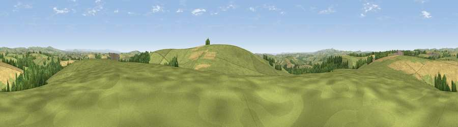

Viewpoint near East Taphouse
#8601 in England · top 17% of its area beats it · near East TaphouseWhere it is
The exact computed spot (SX 18925 60425). Click the marker for map links.
The view, rendered

A 360° render of this exact spot computed from the terrain model, tree cover and land cover — summer colours, afternoon light, calibrated against photographs of famous viewpoints. Real trees, hedges and buildings will differ in detail.
The panorama
Grey silhouette: terrain skyline in each direction (720 bearings, Earth curvature and refraction included). Dashed green: skyline with trees (+15 m) and buildings (+8 m) as obstacles. Blue strip: how far the ground is visible on each bearing.
Where the view opens
Wedge length = distance to the farthest visible ground on that bearing (vegetation-aware). Rings at 10, 25 and 50 km.
What fills the view
62% grassland · 26% cropland · 11% woodland
Angular shares of the visible panorama (visual magnitude), not map area. Landscape diversity 0.40 (0–1 Shannon).
Key numbers
More beautiful places nearby
The staircase of upgrades: each row has a higher view potential than everything closer. Driving times are estimates from straight-line distance, calibrated against real road routing — check an actual route before setting out.
| Place | Direction | Drive | Score |
|---|---|---|---|
| Viewpoint near Lanreath | SSE · 1 km | ~3 min | 75.7 |
| Bin Down | ESE · 9 km | ~18 min | 80.2 |
| Viewpoint near Lansallos | S · 9 km | ~18 min | 81.1 |
| Viewpoint near Polperro | S · 10 km | ~19 min | 81.9 |
| Viewpoint near Polperro | S · 10 km | ~19 min | 83.7 |
| Pencarrow Head | SSW · 10 km | ~19 min | 86.0 |
| Viewpoint near Stenalees | W · 19 km | ~32 min | 88.0 |
| Viewpoint near Crackington Haven | NNW · 34 km | ~52 min | 88.1 |
50.41571, -4.55009 · source: screening · position refined by local search. Computed location — check access rights before visiting.